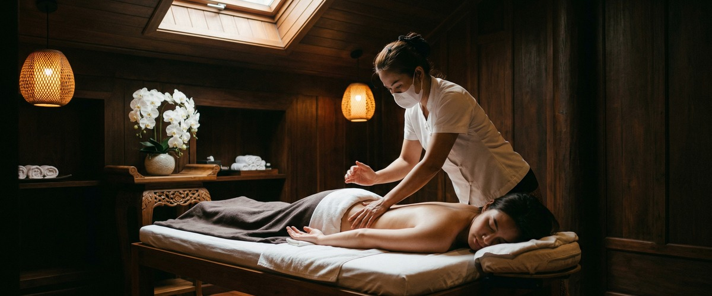
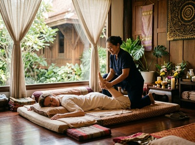
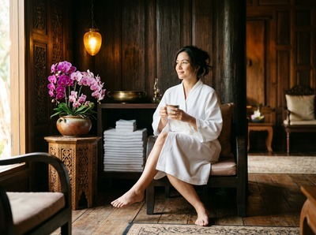

Lan Thai Massage in Glasgow's West End has built a clear identity around traditional Thai healing philosophy, and it is easy to see why people searching for authentic Thai massage in the city find their way to it.

The service menu is broad. It covers everything from Traditional Thai Massage to the more specialist Thai Warrior Massage and Tipping Line Massage. The business presents itself with genuine commitment to holistic wellness.
If you are still searching, it is likely because Lan Thai Massage does not display pricing anywhere on its website, has no visible booking system, and provides no information about therapist qualifications or credentials. For many people, those gaps are reason enough to keep looking before committing to an appointment.

Serendipity Massage Therapy & Wellness is a professional team practice on Hope Street in Glasgow city centre. Every therapist is trained using techniques developed by head therapist Jariya Malone. Those techniques draw from traditional Thai massage and are adapted for precise, consistent results across the full client base. This is not a sole trader studio and not a chain. It is a team built to a defined standard, so the quality of your session does not depend on who is available on a given day.
Practically, Serendipity makes it simple from the first step. Pricing is clear before you book. The full treatment menu covers Thai massage, Thai oil massage, Swedish massage, sports massage, hot stone massage, and aromatherapy massage. Appointments can be confirmed online without a phone call. Book your session today at https://serendipitymassage.co.uk/book-now/
Lan Thai Massage does not display pricing on its website. No booking system or contact details are visible in its online content. Serendipity lists all session prices before you book and accepts online appointments directly through its booking page. For anyone who wants to plan a visit without calling ahead, that difference matters.
Lan Thai Massage does carry a real strength in its West End location. It is a more convenient walk for people based in Hillhead, Partick, or Finnieston. If you work or live closer to the city centre, St Vincent Street, Blythswood Square, or the financial district, Serendipity on Hope Street is likely the closer and easier option. Lan Thai also publishes no information about therapist training or credentials. Serendipity's team is trained to a consistent standard using techniques developed in-house by Jariya Malone. That gives clients a clear sense of what they are booking and who will be treating them.
Serendipity suits people who want to know what they are paying before they arrive. It suits those who prefer to book online at a time that works for them. And it suits anyone who wants a team trained to a clear, consistent standard. It is a strong fit for office workers around Hope Street, West George Street, and St Vincent Street. It also works well for professionals in Glasgow's financial district who need a treatment that fits around a working day. Anyone travelling in from across the city will find Buchanan Street and St Enoch subway stations both within a short walk of Central Chambers.
From Lan Thai Massage in the West End, the most direct route on foot takes roughly 25 to 30 minutes. Head east along Great Western Road toward St George's Cross. Continue along Sauchiehall Street through Charing Cross and into the city centre. At Blythswood Street, turn right and walk south to West George Street. Continue one block east to Hope Street and turn left. Serendipity is at 93 Hope Street, Floor 1, Suite 50, inside Central Chambers. You can also take the underground from Kelvinbridge or Hillhead to Buchanan Street in a few stops. Hope Street is a five-minute walk south from there.
Get driving directions to Serendipity Massage Therapy & Wellness:

Serendipity Massage Therapy & Wellness — Floor 1, Suite 50, Central Chambers, 93 Hope Street, Glasgow G2 6LD
Book online now at https://serendipitymassage.co.uk/book-now/ and confirm your appointment without a phone call.
Yes. Serendipity accepts bookings directly through its website at https://serendipitymassage.co.uk/book-now/ You can confirm your appointment online at any time without needing to call ahead. Lan Thai Massage does not display a booking system or contact details on its website.
Serendipity's team is trained using techniques developed by head therapist Jariya Malone. Those techniques draw from traditional Thai massage practice. Every therapist is trained to the same standard, so the quality of your session stays consistent no matter who you see. Lan Thai Massage does not publish information about therapist qualifications or credentials on its website.
Serendipity is at Floor 1, Suite 50, Central Chambers, 93 Hope Street, Glasgow G2 6LD. That puts it in the heart of Glasgow's financial district. Both Buchanan Street and St Enoch subway stations are within a five-minute walk. If you are travelling from the West End, Kelvinbridge or Hillhead underground connects to Buchanan Street in a few stops.
Serendipity offers Thai massage, Thai oil massage, Swedish massage, sports massage, hot stone massage, and aromatherapy massage. Each treatment is delivered by a trained therapist using techniques developed in-house by Jariya Malone. Full treatment details are available on the Serendipity website.
Yes. Serendipity displays all prices on its website before you confirm a booking. Lan Thai Massage does not show any pricing information on its website. That means you would need to contact them separately to find out what a session costs.
Serendipity on Hope Street is the closer option for anyone working or visiting in Glasgow's city centre, Blythswood Square, or the financial district. Lan Thai Massage is in the West End and will suit those based in Hillhead, Partick, or Finnieston. Both are accessible by underground from different parts of the city.
Book your appointment online at https://serendipitymassage.co.uk/book-now/ and see all available treatments and times.